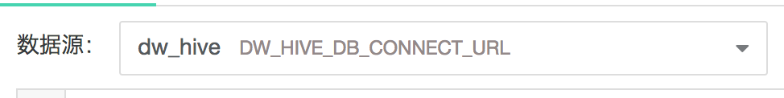
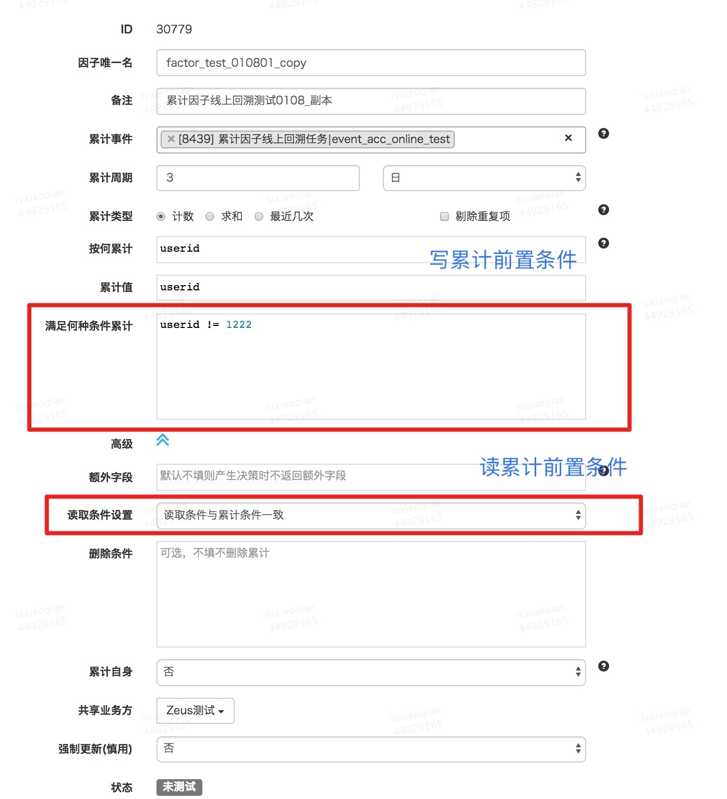
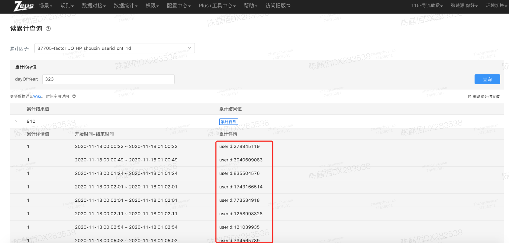

累计问题自查
累计的执行过程
发送/删除累计
a. 在zeus上新增累计事件（如果有需求）。
b. RD在代码中，在PM期望的请求中调用zeus的接口(发送累计为sendAccumulate，删除累计为deleteAccumulate)，传入参数上下文和累计事件id。
c. zeus先通过累计事件id筛选累计。
d. zeus通过上下文筛选符合条件的累计。
e. 调用发送累计接口，zeus将符合条件累计发送给累计服务；调用删除累计接口，zeus将符合条件的累计进行数据清除
读累计
在规则平台中任意配置，只要符合以下条件，就能读到累计的结果值
- 累计的Key全部都存在于参数/因子列表中且不为null
- 满足读取条件(如果读取条件与累计条件一致，则要满足累计条件)
常见问题及排查方法汇总
1.通用问题汇总
- 累计类型为去重计数或去重求和时，去重的次数不能超过800（也不准确，具体看累计值的大小）次，此时会发现800次以后累计不上的问题从而造成累计不准确，解决方法是对于去重次数太多的情况不使用去重功能（可以容忍一定误差）
- 在日志查询的参数tab显示参数为空串，在累计tab看到也拿到了累计因子的结果，但是累计因子的读取条件却设置了该参数不为空串，出现这个问题需要查hive表进行验证，因为日志查询在参数/因子的值带有尖括号时会显示为空串，如在hvie中显示的"ssid":"<unknown service>"在日志查询上显示为“ssid”: ""；因此是显示问题
- 某个参数存在且有值，但在日志查询的累计tab显示错误信息为"lost param key xxx"，显示缺失该参数，这是由历史原因造成的，只需要强制更新一下该累计因子即可
- 调用发送/删除累计接口，如果不填“满足何种条件累计”，则无法进行发送操作，如果不填“删除条件”，则无法进行删除操作
- 没有发送累计，但是累计因子却有值。因为累计因子新建时默认为累计自身，在读取累计时，会把当前请求的结果加到累计因子的值上。
- 发送了累计，累计详情显示已经有数据（表示发送累计成功），但是拿到的累计因子的值不符合预期，原因可能是累计因子是累计自身的，在读取累计因子结果时，累计值不能为null，否则无法读累计成功
- 累计因子的累计Key配置了sceneId，在读（获取决策）的时候有该参数，但是在发送累计的时候没有传该参数，导致发送累计不成功，没有累计上值。查看log.rc_zeus_accumulate hive表里的skippedList字段能发现包含该累计因子的名称
- 业务发送累计和读取累计（获取决策）的上下文不同，导致发送累计key与读取累计key不同，进而导致读累计结果一直为0。比较log.rc_zeus_accumulate hive表里的sendList字段和日志查询累计详情tab中累计key，能发现二者的不同
- 累计因子区分场景吗：不区分场景。只要传了accumulateEventId字段，只要eventId下面累计条件满足，就会发累计
- 累计多个事件会有什么结果：一条请求过来会遍历每个累计事件下的所有累计因子，所有符合发累计、读累计的都会发和读
- 累计的key大小不能太大，utf-8转换字节后不能超过1000个字节，否则不会累计上
2.读的累计结果不是0就是1
这种情况下，一般是发累计出现了问题。可以直接查hive表定位问题：
选择数据源：

发累计问题查询SQL：
|
SELECT * from log.rc_zeus_accumulate where accumulateeventid = 35 AND dt=20190210 and hour = '16' and businesscode = 4 and contextlist LIKE '%10868386541536%'; |
字段解释：
log.rc_zeus_accumulate： 所有发累计的相关信息都会写入这个表中。
accumulateeventid：传入zues的累计事件ID，也是累计因子页面配置的累计事件。
businesscode：配置累计因子时的业务ID。访问：Zeus所有业务展示（1：反作弊 2：资金 3：账户 4：反刷单 5：商户 6：yoda）
contextlist：发累计时zeus接收到的所有参数。 这里一般 like 关键信息，比如userid，orderid，uuid。数据查出来之后要确认的问题
1.有没有数据：如果没有数据说明累计就没有发，先自己思考一下，看看 LIKE 条件中值是否正确。 如果确认应该发累计，找相关RD排查，走Tatooine的找TT.RD，其他找Zeus.RD。
2.有数据的话，确认数据时间，是否预期的时间，如果不是，参考1.
3.确认数据时间一致后，复制contextlist的内容到URL在线解码，解码后根据累计因子的累计条件 ， 累计key ，累计值 中的参数/因子，查询参数/因子是否是期望值（是否存在，是否为null或者空，是否和日志查询中值一致），如果有问题，说明参数不正确。
3.读不到累计/为什么没发累计
首先检查一下累计前置条件是否满足，前置条件如下图所示：

4.累计值不符合预期
问题示例：某个累计因子没有设置累计自身，但是在本次请求中，它的值为什么是1，而不是0
首先找到这个累计因子的key值分别是多少（这个可以在日志中找到），接着根据key来查一下当前累计因子的值，看存储的结果是否符合预期。查询地址：https://zeus.sankuai.com/data_zeus_static/#/readFactorError。
查询结果示例如下图所示：

5.累计最近几次不符合预期
累计最近几次默认不累计自身，但有时候会出现累计自身的情况。示例tt链接：https://tt.sankuai.com/ticket/detail?id=8255557
原因：1. 在server集群过生效规则，2. 发累计，3.把server的请求转发到worker集群过标记规则。其中2和3的顺序是无法保证的。这个累计因子只是在标记规则中用到了，所以只会在worker集群计算，那么它计算的时间，就跟发累计的时间先后顺序不确定了。所以会导致这种看起来 有时候读到了自身结果，有时候读不到自身结果 的情况。